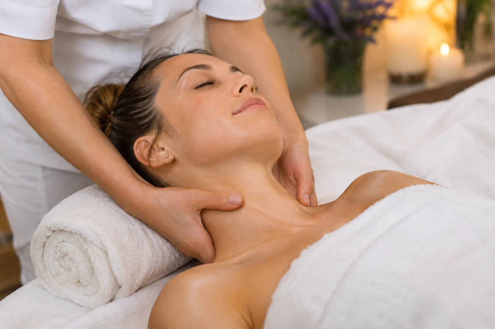

MASSAGES MAJKA · EVIDENCE-INFORMED BLOG ·
Myofascial massage: what to know and what research says

In my massage practice, I also use myofascial techniques – gentle hands-on work with muscles, fascia and other soft tissues. I would like to explain what I focus on and what research tells us about the possible benefits.
What is fascia and myofascial massage?
Fascia is connective tissue surrounding and linking muscles and other structures. Myofascial refers to muscles and fascia together. I use slow, controlled pressure and gentle stretching of soft tissues.
The aim is not to physically “break up” fascia or adhesions. Researchers are still studying how mechanical and nervous-system responses contribute to the sensation of relief. I focus on comfortable pressure and listen to your feedback throughout.
When might it be useful?
I include myofascial techniques according to individual needs, for example when a client experiences tight muscles or tension around the neck, shoulders or back. Some people notice temporary relief or easier movement afterwards, but results are not guaranteed. Not all pain comes from muscles or fascia.
Depending on your needs, I combine myofascial work with soft tissue techniques or classical massage, always considering comfort and health limitations.
What does the research show?
Chronic low-back pain: A 2021 systematic review included eight randomised trials involving 375 people. It found improvements in pain and physical function, while stressing that the number of studies was small and their methods had limitations.
Chronic neck pain: A 2023 review of 13 trials with 601 participants found improvements in pressure-pain thresholds in some muscles. It did not find convincing improvements over comparison groups in pain itself, neck mobility or disability.
Overall: A 2018 systematic review concluded that evidence was not sufficient to recommend myofascial release as a treatment for chronic musculoskeletal pain in general. I therefore interpret the findings cautiously: these techniques may be a helpful addition for some people, but they are not a guaranteed treatment.
My approach to myofascial techniques
I have been practising massage since 2012. Between 2021 and 2025, I spent four years working in a rehabilitation department at a polyclinic in Ružinov, Bratislava. I draw on this experience when combining health-focused massage, soft tissue methods and myofascial techniques to suit your individual needs.
Before we begin, I ask about any discomfort, movement difficulties and health limitations. I adjust the pressure based on your feedback – intense pain is not my goal. You can read more about my experience and explore massages and prices.
When do I recommend postponing massage?
If you have a fever, an acute injury, a skin infection, unusual sudden severe pain or a possible blood clot, seek medical advice first. If you take blood-thinning medication or have a serious medical condition, check with your healthcare professional about the safety and pressure of massage. My massage services are not a substitute for medical assessment or prescribed care.
Scientific references
- Wu et al. (2021). Myofascial Release for Chronic Low Back Pain: A Systematic Review and Meta-Analysis. Frontiers in Medicine. DOI: 10.3389/fmed.2021.697986.
- Guo et al. (2023). Myofascial release for the treatment of pain and dysfunction in patients with chronic mechanical neck pain. Clinical Rehabilitation. DOI: 10.1177/02692155221136108.
- Laimi et al. (2018). Effectiveness of myofascial release in treatment of chronic musculoskeletal pain. Clinical Rehabilitation. DOI: 10.1177/0269215517732820.
- NIH NCCIH: Massage Therapy – What You Need To Know (safety and evidence).
This article is general information, not individual medical advice or a promise of treatment results.